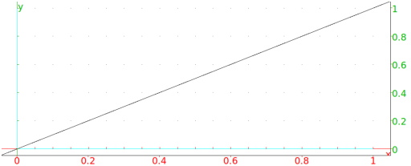

13.7.11 The angle bisector: bisector
The bisector command finds angle bisectors.
-
bisector takes three arguments:
a,b,c, three points (which can also be given as a list).
- bisector(a,b,c) returns and draws the bisector
of ∠ bac.
Example
Input:
bisector(0,1,i)
Output:
